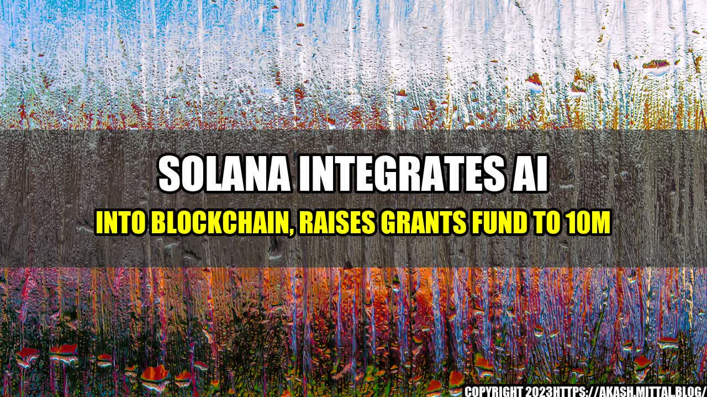

Solana Integrates AI into Blockchain, Raises Grants Fund to 10M
Blockchain technology has revolutionized the way transactions are verified and recorded, but it still has its limitations. One of the key challenges facing blockchain platforms is scalability, and Solana is taking a unique approach to solving this problem: by integrating Artificial Intelligence (AI) and machine learning (ML) into its blockchain architecture.
Solana's blockchain platform is already known for its high-speed transactions and low fees, but by incorporating AI and ML, it will be able to optimize its network resources and improve its functionality. This will help Solana to scale its operations and support more decentralized applications (dApps) that require fast and reliable transaction processing.
How Solana is Using AI to Improve Blockchain Scalability
Solana's AI integration is based on a novel concept called "smart contracts", which are self-executing contracts that rely on code rather than human intermediaries to enforce the terms of an agreement. These contracts can be programmed to execute complex functions, such as distributing rewards, managing reputation, or verifying identity. By using AI and ML algorithms to analyze the behavior of these smart contracts, Solana can identify patterns and optimize them for better performance.
For example, Solana can use AI to predict when a smart contract will run out of resources, such as memory or processing power, and allocate more resources in real-time to prevent it from failing. This can help Solana to avoid congestion and ensure that all transactions are processed quickly and efficiently.
Moreover, Solana's AI integration can also improve the security of its blockchain platform. By monitoring the activity of smart contracts, Solana can detect and prevent malicious attacks, such as code injection or denial-of-service attacks, that can compromise the integrity of the network. This can help Solana to build a more resilient and trustworthy blockchain platform that can support the needs of various industries and use cases.
Solana Raises Grants Fund to Support AI and Blockchain Innovation
In addition to its AI integration, Solana has also raised its grants fund to $10 million to support developers and entrepreneurs who are building innovative solutions on its blockchain platform. The Solana Foundation, which manages the grants program, is looking for projects and dApps that leverage the power of AI and ML to enhance the capabilities of blockchain technology.
The grants program is open to anyone who wants to apply, and the Solana Foundation is particularly interested in projects that focus on scalability, security, interoperability, and usability. Some examples of projects that could receive funding include:
- A decentralized machine learning platform that leverages Solana's fast transaction processing speed and low fees to train models more efficiently and accurately than traditional methods.
- A blockchain-based identity verification system that uses AI to analyze biometric data and prevent fraud or identity theft.
- An autonomous supply chain management system that uses smart contracts and AI to optimize inventory, reduce waste, and improve delivery times.
The Solana Foundation is committed to promoting innovation and advancing the adoption of blockchain technology, and its grants program is a key part of this mission. By supporting talented developers and entrepreneurs, Solana hopes to accelerate the growth of its ecosystem and bring new ideas and solutions to the blockchain industry.
Conclusion
Solana's integration of AI and machine learning is a bold step towards improving the scalability and functionality of blockchain technology. By leveraging the power of these cutting-edge technologies, Solana is able to optimize its network resources and provide faster and more reliable transaction processing. Moreover, by raising its grants fund, Solana is encouraging developers and entrepreneurs to explore the possibilities of AI and blockchain, and to create innovative solutions that can drive the adoption of blockchain technology across various industries.
If you are interested in applying for the Solana grants program or learning more about its AI integration, you can visit the following links:
Curated by Team Akash.Mittal.Blog
Share on Twitter Share on LinkedIn